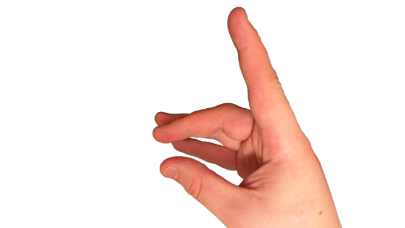

Hold your hand in front of the camera and bring your thumb and index finger together to start
drawing. While pinching/drawing your dot will have a blue stroke. Move your hand while pinching to
create lines on the canvas.
Create Sounds
Move your hand up and down (Y-axis) to control the pitch of the sound.
The higher you hold your hand, the higher the pitch (like blowing higher on a whistle).
The lower your hand, the deeper the sound.
Move your hand left and right (X-axis) to change the tone color.
Moving your hand to the right makes the sound brighter or sharper.
Moving your hand to the left makes the sound softer or warmer.
Add Reverb Effect

Control the reverb effect by adjusting the distance between your thumb and middle fingertip.
The further apart they are, the more spacious and ambient the sound becomes.
The closer they are, the drier and more focused the sound is.